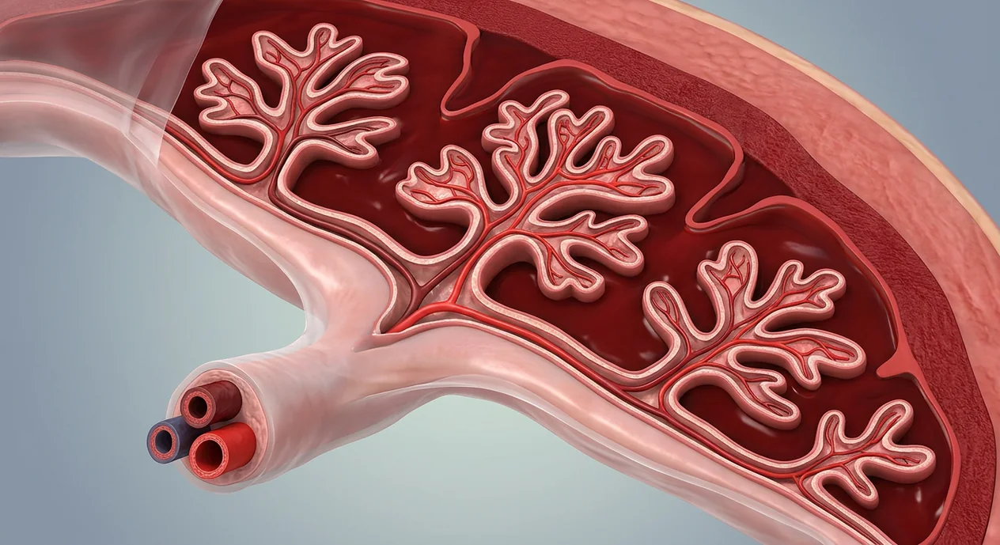

ORGAN → UNDER THE LENS
Chorionic villus · blood compartments
Tap to compare the organ region with a tissue-level teaching illustration.
Read about Chorionic villi ↓Examine decidua, chorionic villi, separate maternal and fetal circulations, placental exchange, membranes and the three-vessel cord.

Chorionic platePlacentaAmnionEarly hCGChorionPlacental steroid productionPlacental lobulesMaternal basal plateChorionic villiFetal capillariesOxygen and carbon dioxide movementIntervillous spacePlacental exchange barrierSpiral arteriesDecidua basalisUterine venous drainagePlacental deliveryWharton jellyOne umbilical veinTwo umbilical arteriesThe placenta joins fetal chorionic villi with a maternal decidual bed. Fetal blood travels in villous capillaries while maternal blood occupies surrounding intervillous spaces; the two circulations are normally separated by a placental barrier rather than directly mixing. The umbilical cord typically contains two arteries and one vein. The amnion surrounds the fluid-filled fetal environment; chorion contributes to the placental interface. Placental structure and transfer change over pregnancy. A computer-generated cross-section cannot measure oxygen transfer, diagnose placental disease or depict every stage. After birth, placenta delivery belongs to a distinct third labor stage.
These are educational cutaways, not literal magnifications of an organ pixel or laboratory slides. A ring marks the approximate tissue region; part-specific lines appear only where identifiable.
Tap to compare the organ region with a tissue-level teaching illustration.
Read about Chorionic villi ↓Sperm and egg are separate branches before fertilization. Obstetric gestational weeks are usually counted from the last menstrual period, roughly two weeks before conception. Digital labor-stage illustrations model separate moments, not clinical birth photographs or patient measurements.
Tap an image to enlarge and tap again to close. These are digital educational models, not microscope photos, measured ultrasounds, clinical birth images or exact developmental clocks.
Pregnancy cross-section, not delivery of the placenta.
Digital microscopic-scale model: maternal blood outside villus and fetal vessels INSIDE; blood compartments are not joined.
These 20 structures describe anatomy related to the chapter’s regional illustration. Each entry separates location, function and a clinical point.
Temporary organ develops at interface of fetal chorion and maternal uterine decidua.
What it doesTransfers gases, nutrients and wastes and produces hormones.
Clinical connectionDigital rendering cannot assess placental function or attachment disorders.
Picture context Pregnancy cross-section, not delivery of the placenta.
Fetal-facing placental plate gives rise to branching villous trees.
What it doesDistributes fetal blood to exchange villi.
Clinical connectionNot the maternal uterine lining itself.
Picture context Pregnancy cross-section, not delivery of the placenta.
Maternal decidual side connects placenta to uterine wall.
What it doesAnchors exchange organ during pregnancy.
Clinical connectionSeparation before birth can be an emergency.
Picture context Pregnancy cross-section, not delivery of the placenta.
Branching projections from fetal chorion extend into maternal blood-filled intervillous region.
What it doesIncrease surface for maternal–fetal exchange.
Clinical connectionNot blood vessels open directly to the maternal circulation.
Picture context Digital microscopic-scale model: maternal blood outside villus and fetal vessels INSIDE; blood compartments are not joined.
Small fetal vessels course within villous stroma.
What it doesCarry fetal blood close to maternal blood across a tissue barrier.
Clinical connectionA stylized branch may not depict normal microscopic scale.
Picture context Digital microscopic-scale model: maternal blood outside villus and fetal vessels INSIDE; blood compartments are not joined.
Maternal blood circulates around villi in placental space.
What it doesProvides maternal source and sink for exchange.
Clinical connectionIt is not the lumen of the fetal umbilical vein.
Picture context Digital microscopic-scale model: maternal blood outside villus and fetal vessels INSIDE; blood compartments are not joined.
Layers between maternal blood and villous fetal capillaries change in thickness with gestation.
What it doesEnable transfer without a direct open continuity of bloodstreams.
Clinical connectionBarrier does not exclude all drugs or pathogens.
Picture context Digital microscopic-scale model: maternal blood outside villus and fetal vessels INSIDE; blood compartments are not joined.
Maternal uterine arteries remodel and deliver blood to placental intervillous spaces.
What it doesSustain maternal perfusion of placenta.
Clinical connectionThis illustration cannot assess arterial remodeling.
Picture context Pregnancy cross-section, not delivery of the placenta.
Maternal blood leaves intervillous spaces through uterine venous channels.
What it doesCompletes maternal side of perfusion circuit.
Clinical connectionDo not label an umbilical vein as a maternal uterine vein.
Picture context Pregnancy cross-section, not delivery of the placenta.
Usually two fetal arteries travel in cord toward placenta.
What it doesCarry fetal blood to placental villous circulation.
Clinical connectionThe word artery denotes direction from fetal heart, not oxygen content.
Picture context Pregnancy cross-section, not delivery of the placenta.
Usually one umbilical vein returns blood from placenta toward fetus.
What it doesCarries oxygenated placental return to developing fetus.
Clinical connectionAnatomical variation needs real clinical evaluation.
Picture context Pregnancy cross-section, not delivery of the placenta.
Gelatinous connective tissue cushions cord vessels.
What it doesHelps protect vessels from compression.
Clinical connectionNot the same as amniotic fluid outside the cord.
Picture context Pregnancy cross-section, not delivery of the placenta.
Inner fetal membrane encloses amniotic cavity and coats fetal placental face.
What it doesProtects fluid environment around developing fetus.
Clinical connectionMembrane color or thickness in drawing cannot diagnose rupture.
Picture context Pregnancy cross-section, not delivery of the placenta.
Outer fetal membrane contributes to placental tissue and surrounds early gestational structures.
What it doesForms the fetal placental contribution.
Clinical connectionNot a second maternal uterus.
Picture context Pregnancy cross-section, not delivery of the placenta.
Pregnancy-modified maternal endometrium at implantation site.
What it doesForms maternal component of placenta.
Clinical connectionThe placenta has both maternal and fetal tissue contributions.
Picture context Pregnancy cross-section, not delivery of the placenta.
Branching villi group into gross placental functional units.
What it doesOrganize regions of exchange.
Clinical connectionNumber and appearance vary; not all are visible in this section.
Picture context Pregnancy cross-section, not delivery of the placenta.
Placental trophoblast makes hCG especially important for corpus luteum in early pregnancy.
What it doesSupports continued ovarian progesterone at first.
Clinical connectionHormone trends cannot be read off this image.
Picture context Pregnancy cross-section, not delivery of the placenta.
Placenta produces hormones including progesterone and estrogens as pregnancy progresses.
What it doesSupports maternal adaptation and uterine environment.
Clinical connectionExact contributions change with gestational stage.
Picture context Pregnancy cross-section, not delivery of the placenta.
Oxygen diffuses toward fetal blood and carbon dioxide toward maternal side across villous tissue.
What it doesSupports developing fetal metabolism.
Clinical connectionMaternal and fetal red cells do not normally need to merge.
Picture context Digital microscopic-scale model: maternal blood outside villus and fetal vessels INSIDE; blood compartments are not joined.
After newborn birth, uterine contraction and placental separation precede delivery of placenta and membranes.
What it doesEnds third stage of labor.
Clinical connectionThe image shows an attached placenta before delivery, not separation in progress.
Picture context Pregnancy cross-section, not delivery of the placenta.
Short answers grounded in the structures described above. Use the illustrated guide for anatomical context.
No. Maternal blood in intervillous spaces surrounds villi containing fetal capillaries. Gases and substances cross a changing tissue barrier rather than flowing through a single shared open blood vessel.
Usually there are two umbilical arteries carrying fetal blood toward the placenta and one umbilical vein returning from placenta toward the fetus. Individual anatomy requires clinical assessment.
The uterine decidua basalis forms the maternal attachment bed, while fetal chorionic villi and chorionic plate form the fetal exchange structures. The amnion covers the fetal-facing side.
Fetal capillaries run inside villi exposed to surrounding maternal intervillous blood. Oxygen, nutrients and wastes transfer across placental tissue; the illustration cannot measure exchange efficiency.
After the baby is born, the placenta and membranes are delivered during the third stage of labor. The anatomy image depicts an attached placenta during pregnancy, not its actual separation.
Follow these connected structures and body systems in the illustrated atlas.
 Implantation · blastocyst in endometriumSeparate implantation stage: endometrial receptivity, hatching, trophoblast invasion and early hCG.↗
Implantation · blastocyst in endometriumSeparate implantation stage: endometrial receptivity, hatching, trophoblast invasion and early hCG.↗ Embryo · early organ formationSeparate embryonic chapter: germ layers, neurulation, folding, early heart and limb buds before fetal growth.↗
Embryo · early organ formationSeparate embryonic chapter: germ layers, neurulation, folding, early heart and limb buds before fetal growth.↗ Uterus — layers & cavityThe womb in cross-section: endometrium, junctional zone, myometrium, cavity, isthmus and the key clinical boundaries.↗
Uterus — layers & cavityThe womb in cross-section: endometrium, junctional zone, myometrium, cavity, isthmus and the key clinical boundaries.↗ Female pelvis & perineumThe female pelvic floor in sagittal section: bladder and urethra, vagina and anteverted uterus, rectum behind — plus the ligaments and pouches that position them.↗
Female pelvis & perineumThe female pelvic floor in sagittal section: bladder and urethra, vagina and anteverted uterus, rectum behind — plus the ligaments and pouches that position them.↗General anatomy references and related source chapters for continued study. These links do not make the digital illustrations clinical images or certify every anatomical variant.
This educational page is not medical advice and has not undergone formal clinical peer review. Spotted an error? Contact the editor.
Open the regional digital plate, study entries and a short self-test. Visible markers occur only for identifiable sperm and oocyte structures.